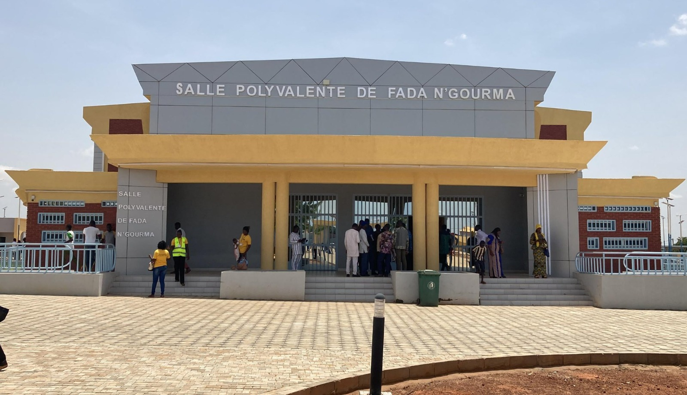
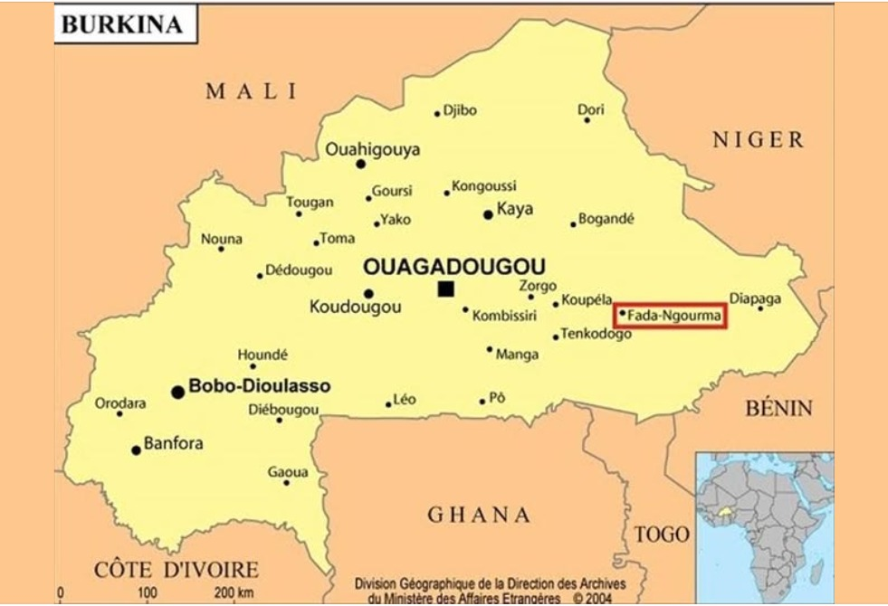
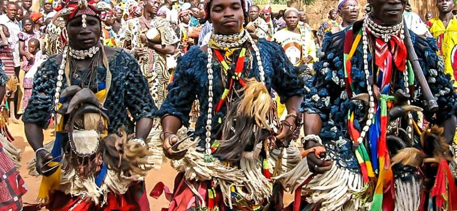
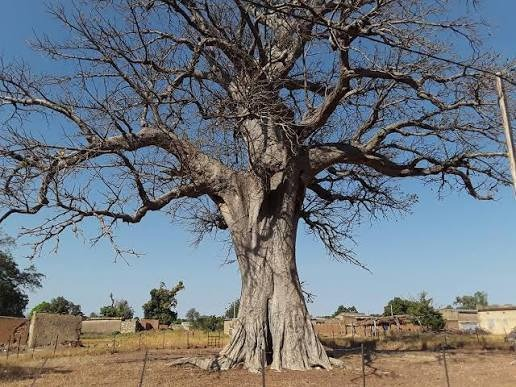
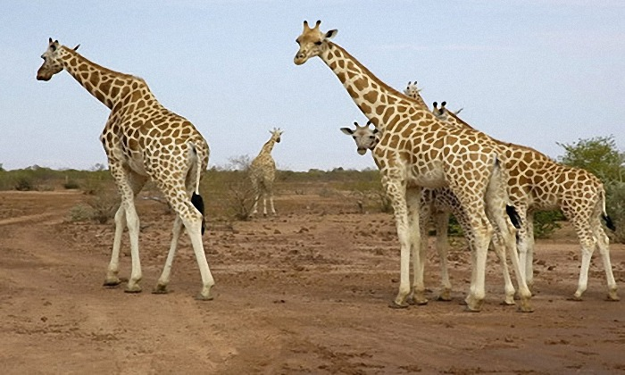
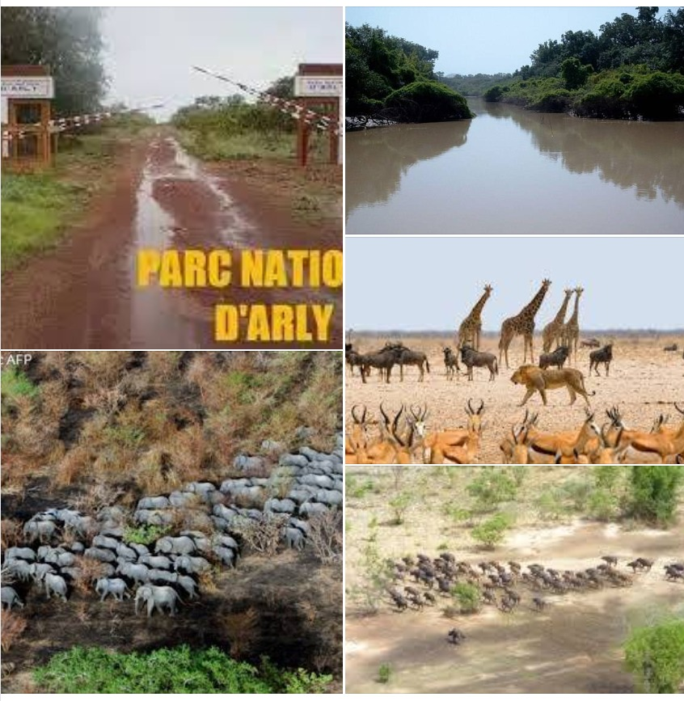
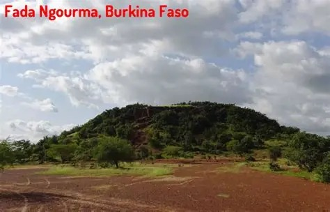
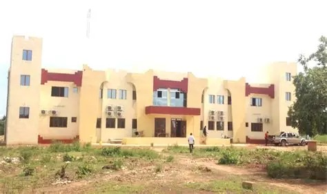

« La savane, la faune, l'authenticité »
Pays : Burkina Faso
Statut : Région
Provinces : 5
Départements : 27
Chef-lieu : Fada N'Gourma
Gouverneur : Bertin Somda (depuis 2011)
Code ISO 3166-2 : BF-08
Code INSD : 04
Population (2024) : 2 240 200 hab.
Densité : 62 hab./km²
Coordonnées : 12°15'N, 1°00'E
Superficie : 36 256 km²
Fuseau horaire : UTC+0
Indicatif téléphonique : +226

Présentation
La région a été administrativement créée le 2 juillet 2001, en même temps que 12 autres. Avant le 2 juillet 2025, la région est connue sous le nom de l’Est. Elle prend officiellement le nom de Goulmou dans le cadre d’une réforme administrative visant à valoriser des dénominations à caractère endogène[2]. Le Goulmou est une appellation historique qui désigne un ensemble ethnolinguistique et culturel traditionnellement rattaché à la fidélité au roi de Fada N'Gourma[3]
Goulmou (anciennement région de l'Est) est l'une des 17 régions administratives du Burkina Faso selon le découpage territorial révisé adopté le 2 juillet 2025. Cette région abrite une partie du célèbre Parc W, classé au patrimoine mondial de l'UNESCO. Elle est le royaume des éléphants, lions, buffles et hippopotames. Fada N'Gourma, son chef-lieu, est la capitale des Gourmantché, peuple réputé pour son artisanat et ses traditions. Le Goulmou est une appellation historique qui désigne un ensemble ethnolinguistique et culturel traditionnellement rattaché à la fidélité au roi de Fada N'Gourma.

La région de Fada au Burkina Faso est riche en traditions et en coutumes qui reflètent la diversité culturelle de la région. Les Gourmantché, qui habitent cette région, ont des pratiques culturelles et religieuses uniques qui sont transmises de génération en génération. Les traditions incluent des rituels spirituels, des célébrations saisonnières, et des activités artistiques qui sont essentielles à la vie communautaire. Les festivals, comme le Festival Dilembu, sont des événements marquants qui célèbrent ces traditions et promeuvent le patrimoine culturel de la région

Le Baobab Sacré de Fada N'Gourma est un symbole emblématique de la région, offrant une vue sur l'histoire et la culture de la ville. Ce baobab mythique, qui vit depuis plus de 350 ans, porte les marques du passage du légendaire Yendabili, XIVe roi du Gourma. Les traces de chevaux sur le tronc de l'arbre racontent une histoire de bravoure et de bravoure, peignant la bravoure d'un roi qui a fondé le Royaume du Gourma vers 1700. Classé comme patrimoine national en 2017, ce géant baobab est visité chaque année par des milliers de touristes, témoignant de son importance culturelle et historique.

Le Parc National du W est le plus vaste parc naturel régional d'Afrique de l'Ouest, s'étendant sur une superficie de 10 302 km². Il est situé dans le territoire de trois pays : le Bénin, le Niger et au Burkina Faso dans le region de Goulmou. Créé en 1954, il a été classé réserve totale de faune avant d'être érigé en parc national. Le parc est connu pour sa biodiversité exceptionnelle, abritant une grande variété de faune, notamment des éléphants, des lions et des hippopotames. Il a été reconnu comme site du patrimoine mondial de l'UNESCO en 1996 et est un exemple de parc transfrontalier, impliquant les trois pays riverains dans la gestion durable de ses écosystème

Le Parc National d'Arly, également connu sous le nom de réserve totale de faune d'Arly, est un site d'exception au Burkina Faso, reconnu pour sa richesse faunique et sa biodiversité. Ce parc, qui s'étend sur 76 000 hectares, abrite une grande variété d'animaux, notamment des éléphants, des hippopotames, des antilopes, des singes et de nombreuses espèces d'oiseaux. Le parc est également un habitat privilégié pour de nombreuses espèces d'oiseaux migrateurs et résidents, contribuant ainsi à la préservation de l'écosystème local. La végétation du parc est dominée par des savanes arborées et des savanes boisées moyennement denses, offrant un cadre idéal pour la vie sauvage. Wikipedia +1 Le parc est situé dans la province de la Tapoa, en zone soudanienne, et est transfrontalier avec le Parc National du W (Niger) et la Réserve de la Pendjari (Bénin). Ensemble, ces trois entités forment le complexe W-Arly-Pendjari, un ensemble écologique transfrontalier reconnu pour sa richesse faunique et sa gestion concertée. fsoactf.org Le Parc National d'Arly est un exemple de la biodiversité exceptionnelle de l'Afrique de l'Ouest et constitue un pilier du réseau écologique sous-régional. Il est également un site Ramsar depuis 2009 pour l'importance internationale de ses zones humide

Fada N’Gourma possède un environnement typique de la savane soudanienne, riche en ressources naturelles mais vulnérable aux pressions humaines et climatiques.

Tourisme & Culture
Ressources naturelles
Potentiel agricole 🌾
Potentiel éducatif 🏫

Potentiel commercial 🛒
Artisanat traditionnel
Spécialités culinaires
Galerie photos
Carte de situation
Provinces
Le saviez-vous ?
Le Parc W est le seul parc national transfrontalier d'Afrique de l'Ouest, partagé entre trois pays : Burkina Faso, Niger et Bénin. Il abrite la plus grande population d'éléphants d'Afrique de l'Ouest, avec plus de 3 000 individus recensés. Goulmou est une appellation historique qui désigne un ensemble ethnolinguistique et culturel traditionnellement rattaché à la fidélité au roi de Fada N'Gourma.